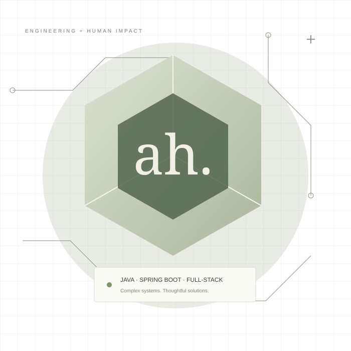

DEMO CONCEPT↗
DEMO CONCEPT↗ClearBank — Banking, made clear.
A concept dashboard for everyday banking, transfers, and transaction insights.
SENIOR SOFTWARE ENGINEER · KARACHI, PK
I’m Alamgeer Hyder. I build secure banking systems and intuitive digital experiences — from the API to the interface.

SELECTED WORK
DEMO CONCEPT↗A concept dashboard for everyday banking, transfers, and transaction insights.
 DEMO CONCEPT↗
DEMO CONCEPT↗A payment gateway simulator exploring secure APIs and reliable transaction flows.
 DEMO CONCEPT↗
DEMO CONCEPT↗A fitness UI concept inspired by my university activity-recognition project.
WHAT I DO
Secure REST APIs and enterprise services built with Java and Spring Boot.
Clear, considered interfaces using Vue.js, React, and TypeScript.
Transaction workflows with attention to data integrity and business rules.
Architecture discussions, code reviews, and practical developer mentorship.
02 / BEHIND THE CODE
I’m a Karachi-based software engineer with four years of experience turning complex business requirements into dependable software.
At Teresol, I contribute to Bank AL Habib’s core banking re-engineering — developing secure APIs, building multi-step interfaces, and helping teams ship with confidence.
Have something in mind? Let’s connect ↗Java · Spring Boot · Hibernate · JPA
Spring Security · Keycloak · REST APIs
Vue.js · React · TypeScript
XState · JavaScript · HTML & CSS
MySQL · DB2 · PostgreSQL · JUnit
GitLab CI/CD · GitHub Actions · ELK
Bank AL Habib Core Banking Re-Engineering
Final year project: AI-powered fitness activity recognition using Kotlin, Firebase, and KNN.
ALWAYS LEARNING
Spring Boot Microservices ↗
Apache Kafka ↗
JPA & Hibernate ↗
DevOps: Microservices ↗
LinkedIn Learning certificationsMY APPROACH
Clarify users, requirements, business rules, and constraints.
Map the data, interfaces, and system boundaries.
Build maintainable software with clear contracts and tests.
Review with the team, validate behavior, and learn from production.
LET’S BUILD SOMETHING THAT MATTERS